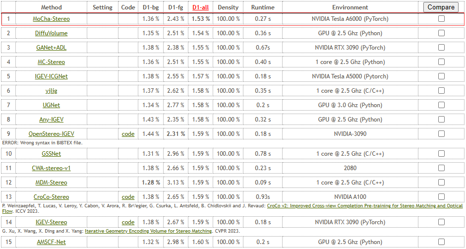
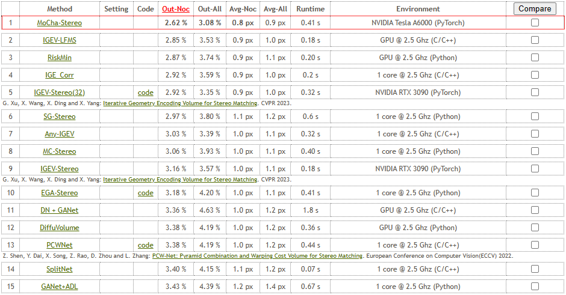
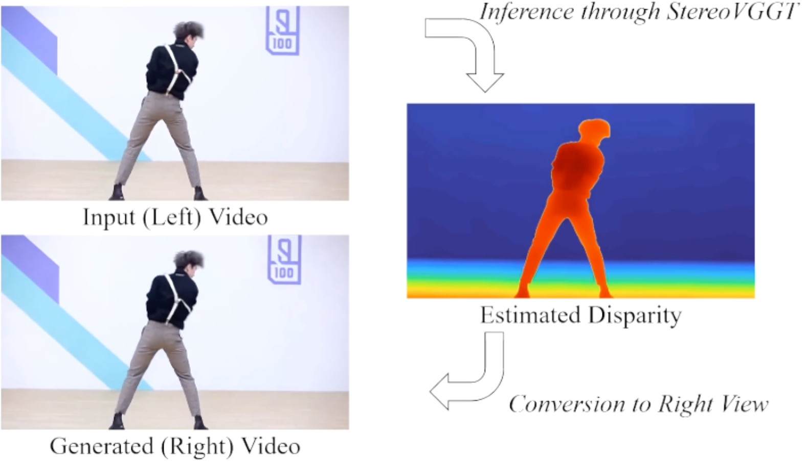
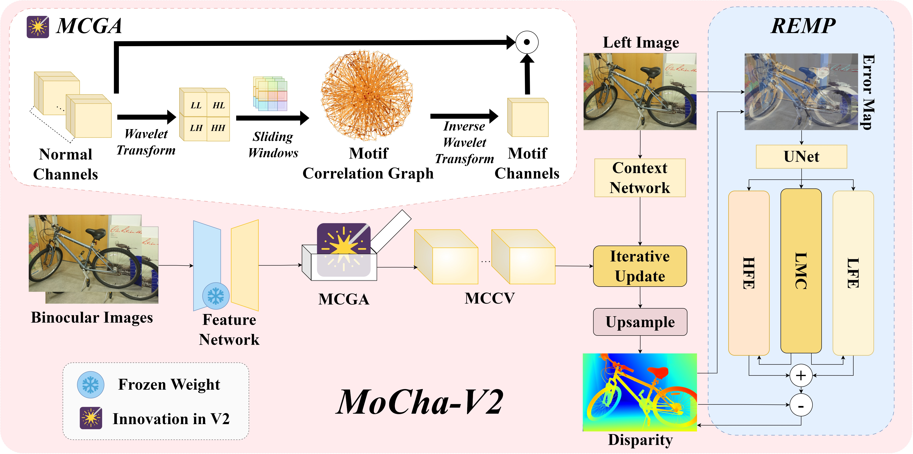
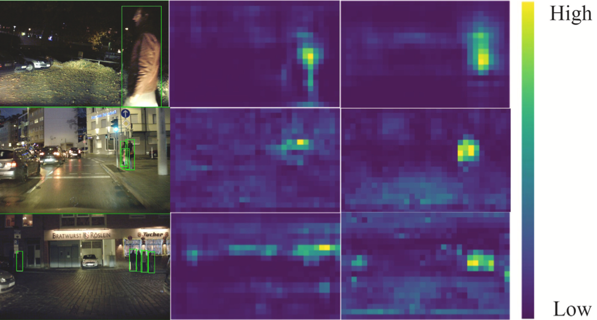
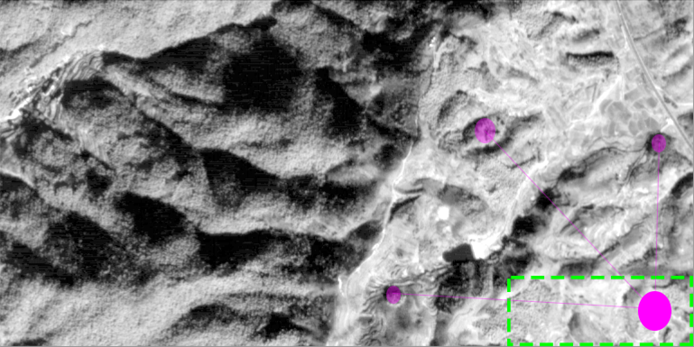
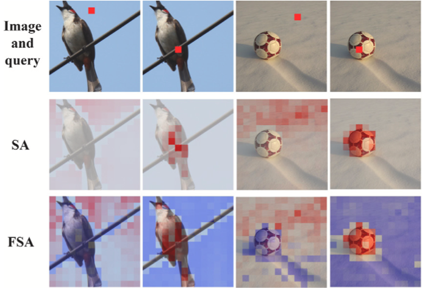

News
Recent Highlights
Jun. 7, 2024
MoCha-V2 ranks 1st on the Middlebury benchmark!
Leaderboard screenshots
Feb. 27, 2024
MoCha-Stereo (抹茶算法) is accepted by CVPR 2024 with sustained 1st-place streaks on KITTI 2015 and KITTI 2012 Reflective benchmarks (245 days).
Related report
Leaderboard screenshots
- KITTI 2015 leaderboard

- KITTI 2012 Reflective leaderboard

Works
Selected Publications

Preprint
StereoVGGT: A Training-Free Visual Geometry Transformer for Stereo Vision
Ziyang Chen, Yansong Qu, You Shen, Xuan Cheng, Liujuan Cao✉
Conference
SplitFlux: Learning to Decouple Content and Style from a Single Image
Yitong Yang, Yinglin Wang, Changshuo Wang, Yongjun Zhang, Ziyang Chen, Shuting He✉
IEEE Conference on Computer Vision and Pattern Recognition (CVPR) 2026 · CCF-A

Preprint
Motif Channel Opened in a White-Box: Stereo Matching via Motif Correlation Graph
Ziyang Chen, Yongjun Zhang✉, Wenting Li, Bingshu Wang, Yong Zhao, C. L. Philip Chen

Journal
FDN-MVS: Feature Distribution Normalization Network for Multi-View Stereo
Ziyang Chen, Yang Zhao, Junling He, Yujie Lu, Zhongwei Cui, Wenting Li, Yongjun Zhang✉
The Visual Computer · CCF-C · JCR Q2 · SCI Q3 · IF 3.5
CVPR 2024

Conference
MoCha-Stereo: Motif Channel Attention Network for Stereo Matching
Ziyang Chen†, Wei Long†, He Yao†, Yongjun Zhang✉, Bingshu Wang, Yongbin Qin, Jia Wu
IEEE Conference on Computer Vision and Pattern Recognition (CVPR) 2024 · CCF-A

Journal
Rethinking Low-light Knowledge for Pedestrian Detection in Nighttime Conditions
Ziyang Chen†, He Yao†, Wenting Li, Wei Long, Yongjun Zhang✉
Engineering Applications of Artificial Intelligence (EAAI) · CCF-C · JCR Q1 · SCI Q1 · IF 8.0

Journal
Surface Depth Estimation from Multi-view Stereo Satellite Images with Distribution Contrast Network
Ziyang Chen, Wenting Li, Zhongwei Cui, Yongjun Zhang✉
IEEE Journal of Selected Topics in Applied Earth Observations and Remote Sensing (IEEE JSTARS) · JCR Q1 · SCI Q2 · IF 4.7

Journal
Leveraging Negative Correlation for Full-range Self-attention in Vision Transformers
Wei Long†, Ziyang Chen†, Wenting Li, Yongjun Zhang✉, He Yao, Jiaxin Peng, Zhongwei Cui
Pattern Recognition (PR) · CCF-B · JCR Q1 · SCI Q1 · IF 8.0
Note: ✉ indicates corresponding author, † denotes co-first author.
View all publications on Google Scholar.
Employments
Industry Experiences
Fujian Star-Net Communication Co.,Ltd.
(星网锐捷)
AI Algorithm Engineer (Intern)
🚀Research Focus:
Desktop Robot/Interactive Robot
· RKNPU On-Device Deployment
· Vision Perception Algorithm
AI Cluster Server
· Model Adaptation for Chinese GPU
Zettlab AI (吾云创新)
AI Algorithm Engineer (Intern)
🚀Research Focus:
Conversational AI Agent
· Large Language Model Algorithm
· Text-to-Speech Algorithm
· Automatic Speech Recognition Algorithm
Honors
Selected Awards
- 🇨🇳 27th China Robotics and Artificial Intelligence Competition (CRAIC2025) · National First Prize · First Author
第二十七届中国机器人及人工智能大赛 · 全国总决赛一等奖 · 第一作者
- 🇨🇳 19th "Challenge Cup" National College Student Curricular Academic Science and Technology Works Competition (2025) · Provincial Third Prize · Second Author
第十九届“挑战杯”全国大学生课外学术科技作品竞赛 · 贵州省三等奖 · 第二作者
Service
Academic Services
Conference Reviewer
- IEEE Conference on Computer Vision and Pattern Recognition (CVPR) 2026
- Neural Information Processing Systems Conference (NeurIPS) 2025
I have declined the reviewer invitation from NeurIPS 2026.
Journal Reviewer
- IEEE Transactions on Pattern Analysis and Machine Intelligence (IEEE TPAMI)
- IEEE Transactions on Circuits and Systems for Video Technology (IEEE TCSVT)
- IEEE Journal of Selected Topics in Applied Earth Observations and Remote Sensing (IEEE JSTARS)
- Pattern Recognition (PR)
- Knowledge-Based Systems (KBS)
- Neurocomputing
- Information Sciences
- Photogrammetric Engineering & Remote Sensing
- International Journal of Machine Learning and Cybernetics
- Signal, Image and Video Processing
- Electronics Letters
Memberships
- IEEE Student Member
- CCF Student Member
Teaching
Teaching Experiences
- Teaching Assistant · 多媒体技术 · Xiamen University · Spring 2026
- Teaching Assistant · 高级语言程序设计 · Guizhou University · Fall 2023
- Teaching Assistant · 面向对象程序设计 · Guizhou University · Spring 2023